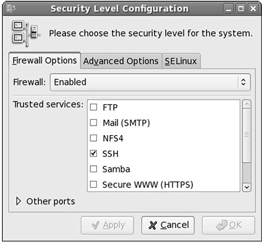
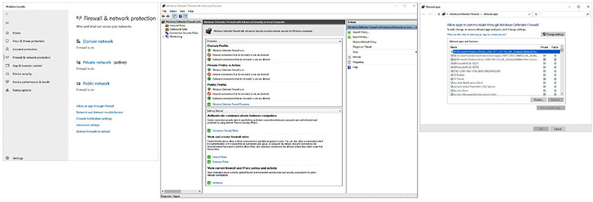

Table of Contents for
CompTIA Security+ All-in-One Exam Guide, Sixth Edition (Exam SY0-601)), 6th Edition
- Cover (01:09 mins)
- Title Page (01:09 mins)
- Copyright Page (03:27 mins)
- Dedication (01:09 mins)
- About the Authors (04:36 mins)
- Contents (19:33 mins)
- Preface (02:18 mins)
- Acknowledgments (01:09 mins)
- Introduction (12:39 mins)
-
Part I Threats, Attacks, and Vulnerabilities (01:09 mins)
- Chapter 1 Social Engineering Techniques (35:39 mins)
- Chapter 2 Type of Attack Indicators (37:57 mins)
- Chapter 3 Application Attack Indicators (33:21 mins)
- Chapter 4 Network Attack Indicators (39:06 mins)
- Chapter 5 Threat Actors, Vectors, and Intelligence Sources (44:51 mins)
- Chapter 6 Vulnerabilities (31:03 mins)
- Chapter 7 Security Assessments (23:00 mins)
- Chapter 8 Penetration Testing (25:18 mins)
-
Part II Architecture and Design (01:09 mins)
- Chapter 9 Enterprise Security Architecture (26:27 mins)
- Chapter 10 Virtualization and Cloud Security (25:18 mins)
- Chapter 11 Secure Application Development, Deployment, and Automation Concepts (27:36 mins)
- Chapter 12 Authentication and Authorization (33:21 mins)
- Chapter 13 Cybersecurity Resilience (39:06 mins)
- Chapter 14 Embedded and Specialized Systems (41:24 mins)
- Chapter 15 Physical Security Controls (49:27 mins)
- Chapter 16 Cryptographic Concepts (42:33 mins)
-
Part III Implementation (01:09 mins)
- Chapter 17 Secure Protocols (20:42 mins)
- Chapter 18 Host and Application Security (46:00 mins)
- Chapter 19 Secure Network Design (67:51 mins)
- Chapter 20 Wireless Security (25:18 mins)
- Chapter 21 Secure Mobile Solutions (43:42 mins)
- Chapter 22 Implementing Cloud Security (24:09 mins)
- Chapter 23 Identity and Account Management Controls (33:21 mins)
- Chapter 24 Implement Authentication and Authorization (37:57 mins)
- Chapter 25 Public Key Infrastructure (55:12 mins)
- Part IV Operations and Incident Response (01:09 mins)
- Part V Governance, Risk, and Compliance (01:09 mins)
- Part VI Appendixes and Glossary (01:09 mins)
- Glossary (65:33 mins)
- Index (67:51 mins)
CHAPTER 18
Host and Application Security
In this chapter, you will
• Examine how to implement host-based security solutions
• Explore application security solutions
Computing involves the processing of data using machines and applications. Ensuring that both machines and the applications that run on them are as secure as possible is an important part of an enterprise security program. This chapter explores the steps used to secure both hardware and the applications that run on it to manage overall system risk.
Certification Objective This chapter covers CompTIA Security+ exam objective 3.2: Given a scenario, implement host or application security solutions.
Endpoint Protection
Endpoint protection is the concept of extending the security perimeter to the devices that are connecting to the network. A variety of endpoint protection solutions can be employed, including antivirus/anti-malware solutions, endpoint detection and response solutions, data loss prevention solutions, and firewalls. Host-based intrusion detection and prevention solutions can also be deployed at endpoints. Not all endpoints are the same with respect to either capability or the risks from attack, and endpoint solutions should be tailored to take those elements into account.
Antivirus
Antivirus (AV) products attempt to identify, neutralize, or remove malicious programs, macros, and files. These products were initially designed to detect and remove computer viruses, though many of the antivirus products are now bundled with additional security products and features. Most current antivirus software packages provide protection against a wide range of threats, including viruses, worms, Trojans, and other malware. Use of an up-to-date antivirus package is essential in the current threat environment.
Although antivirus products have had over two decades to refine their capabilities, the purpose of the antivirus products remains the same: to detect and eliminate computer viruses and malware. Most antivirus products combine the following approaches when scanning for viruses:
• Signature-based scanning Much like an intrusion detection system (IDS), the antivirus products scan programs, files, macros, e-mails, and other data for known worms, viruses, and malware. The antivirus product contains a virus dictionary with thousands of known virus signatures that must be frequently updated, as new viruses are discovered daily. This approach will catch known viruses but is limited by the virus dictionary—what it does not know about, it cannot catch.
• Heuristic scanning (or analysis) Heuristic scanning does not rely on a virus dictionary. Instead, it looks for suspicious behavior—anything that does not fit into a “normal” pattern of behavior for the operating system (OS) and applications running on the system being protected.
As signature-based scanning is a familiar concept, let’s examine heuristic scanning in more detail. Heuristic scanning typically looks for commands or instructions that are not normally found in application programs, such as attempts to access a reserved memory register. Most antivirus products use either a weight-based system or a rule-based system in their heuristic scanning (more effective products use a combination of both techniques). A weight-based system rates every suspicious behavior based on the degree of threat associated with that behavior. If the set threshold is passed based on a single behavior or a combination of behaviors, the antivirus product will treat the process, application, macro, and so on that is performing the behavior(s) as a threat to the system. A rule-based system compares activity to a set of rules meant to detect and identify malicious software. If part of the software matches a rule, or if a process, application, macro, and so on performs a behavior that matches a rule, the antivirus software will treat that as a threat to the local system.
Some heuristic products are very advanced and contain capabilities for examining memory usage and addressing, a parser for examining executable code, a logic flow analyzer, and a disassembler/emulator so they can “guess” what the code is designed to do and whether or not it is malicious.

EXAM TIP Heuristic scanning is a method of detecting potentially malicious or “virus-like” behavior by examining what a program or section of code does. Anything that is “suspicious” or potentially “malicious” is closely examined to determine whether or not it is a threat to the system. Using heuristic scanning, an antivirus product attempts to identify new viruses or heavily modified versions of existing viruses before they can damage your system.
As with IDS/IPS products, encryption and obfuscation pose a problem for antivirus products: anything that cannot be read cannot be matched against current virus dictionaries or activity patterns. To combat the use of encryption in malware and viruses, many heuristic scanners look for encryption and decryption loops. As malware is usually designed to run alone and unattended, if it uses encryption, it must contain all the instructions to encrypt and decrypt itself, as needed. Heuristic scanners look for instructions such as the initialization of a pointer with a valid memory address, manipulation of a counter, or a branch condition based on a counter value. While these actions don’t always indicate the presence of an encryption/decryption loop, if the heuristic engine can find a loop, it might be able to decrypt the software in a protected memory space, such as an emulator, and evaluate the software in more detail. Many viruses share common encryption/decryption routines that help antivirus developers.
Current antivirus products are highly configurable, and most offerings will have the following capabilities:
• Automated updates Perhaps the most important feature of a good antivirus solution is its ability to keep itself up to date by automatically downloading the latest virus signatures on a frequent basis. This usually requires that the system be connected to the Internet in some fashion and that updates be performed on a daily (or more frequent) basis.
• Automated scanning Most antivirus products allow for the scheduling of automated scans so that you can designate when the antivirus product will examine the local system for infected files. These automated scans can typically be scheduled for specific days and times, and the scanning parameters can be configured to specify what drives, directories, and types of files are scanned.
• Media scanning Removable media is still a common method for virus and malware propagation, and most antivirus products can be configured to automatically scan optical media, USB drives, memory sticks, or any other types of removable media as soon as they are connected to or accessed by the local system.
• Manual scanning Many antivirus products allow the user to scan drives, files, or directories (folders) “on demand.”
• E-mail scanning E-mail is still a major method of virus and malware propagation. Many antivirus products give users the ability to scan both incoming and outgoing messages as well as any attachments.
• Resolution When the antivirus product detects an infected file or application, it can typically perform one of several actions. The antivirus product may quarantine the file, making it inaccessible. It may try to repair the file by removing the infection or offending code, or it may delete the infected file. Most antivirus products allow the user to specify the desired action, and some allow for an escalation in actions, such as cleaning the infected file if possible and quarantining the file if it cannot be cleaned.
Antivirus solutions are typically installed on individual systems (desktops, servers, and even mobile devices), but network-based antivirus capabilities are also available in many commercial gateway products. These gateway products often combine firewall, IDS/IPS, and antivirus capabilities into a single integrated platform. Most organizations will also employ antivirus solutions on e-mail servers, as that continues to be a very popular propagation method for viruses.

NOTE The intentions of computer virus writers have changed over the years—from simply wanting to spread a virus in order to be noticed, to creating stealthy botnets as a criminal activity. One method of remaining hidden is to produce viruses that can morph to lower their detection rates by standard antivirus programs. The number of variants for some viruses has increased from less than 10 to greater than 10,000. This explosion in signatures has created two issues: One, users must constantly (sometimes more than daily) update their signature file. Two, and more important, detection methods are having to change as the number of signatures becomes too large to scan quickly. For end users, the bottom line is simple: update signatures automatically, and at least daily.
While the installation of a good antivirus product is still considered a necessary best practice, there is growing concern about the effectiveness of antivirus products against developing threats. Early viruses often exhibited destructive behaviors; they were poorly written and modified files and were less concerned with hiding their presence than they were with propagation. We are seeing an emergence of viruses and malware created by professionals, sometimes financed by criminal organizations or governments, that go to great lengths to hide their presence. These viruses and malware are often used to steal sensitive information or turn the infected PC into part of a larger botnet for use in spamming or attack operations.
EXAM TIP Antivirus is an essential security application on all platforms. There are numerous compliance schemes that mandate antivirus deployment, including Payment Card Industry Data Security Standard (PCI DSS) and North American Electric Reliability Council Critical Infrastructure Protections (NERC CIP).
Anti-Malware
In the early days of PC use, threats were limited: most home users were not connected to the Internet 24/7 through broadband connections, and the most common threat was a virus passed from computer to computer via an infected floppy disk (much like the medical definition, a computer virus is something that can infect the host and replicate itself). But things have changed dramatically since those early days, and current threats pose a much greater risk than ever before. Automated probes from botnets and worms are not the only threats roaming the Internet—there are viruses and malware spread by e-mail, phishing, infected websites that execute code on your system when you visit them, adware, spyware, and so on. Anti-malware is the name of a product designed to protect your machine from malicious software or malware. Today, most anti-malware solutions are combined with antivirus solutions into a single product. Fortunately, as the threats increase in complexity and capability, so do the products designed to stop them. One of the most dangerous forms of malware is ransomware; it spreads quickly, encrypting a user’s files and locking it until a ransom is paid. For more details on anti-malware products, reread the preceding “Antivirus” section and realize that malware is a different threat than a virus, but the defenses are the same.
Endpoint Detection and Response (EDR)
Endpoint detection and response (EDR) solutions are integrated solutions that combine individual endpoint security functions into a complete package. Having a packaged solution makes updating easier, and frequently these products are designed to integrate into an enterprise-level solution with a centralized management platform. Some of the common EDR components include antivirus, anti-malware, software patching, firewall, and DLP solutions. Unified endpoint management (UEM) is a newer security model that focuses on the managing and securing devices in an enterprise such as desktops, laptops, smartphones, and other devices from a single location. UEM is covered in Chapter 22.
DLP
Data loss prevention (DLP) solutions serve to prevent sensitive data from leaving the network without notice. What better place to check than at endpoints? Well, it is important to understand what an endpoint is. For e-mail, the endpoint really is the server, and this offers a scalable location against multiple mailboxes. Applying DLP across endpoints to chase items such as USB downloads of data can be an exercise fraught with heavy maintenance of DLP rulesets, heavyweight clients that affect endpoint performance, and a lack of discrimination that can cause productivity issues. This has led to endpoint DLP monitoring, where file activity is reported to centralized systems, and to specialized DLP offerings such as the content DLP being rolled out by Microsoft across the Microsoft 365 environment. These endpoint solutions do not provide complete or comprehensive coverage but taken together can achieve many of the objectives with less cost and complexity.
Next-Generation Firewall (NGFW)
Next-generation firewalls (NGFWs) act by inspecting the actual traffic crossing the firewall—not just looking at the source and destination addresses and ports, but also at the actual content being sent. This makes next-generation firewalls a potent player in the hunt for malicious content on the way in and company secrets on the way out. As with all of these rule-driven platforms, the challenge is in maintaining appropriate rulesets that catch the desired bad traffic.
Host-based Intrusion Detection System (HIDS)
Host-based intrusion detection systems (HIDSs) act to detect undesired elements in network traffic to and from the host. Because the intrusion detection system is tied to the host, it can be very specific with respect to threats to the host OS and ignore those that would have no effect. Being deployed at a specific endpoint, it can be tuned to the specifics of the endpoint and endpoint applications, providing greater levels of specific detection. The disadvantage of the HIDS is that it only detects the issues; it must rely on another component, typically through some logging or reporting mechanism, to act on the threat. This is resolved in a host-based intrusion prevention system, discussed in the next section.
Host-based Intrusion Prevention System (HIPS)
A host-based intrusion prevention system (HIPS) is a HIDS with additional components to permit it to respond automatically to a threat condition. The response can be as simple as dropping a packet, up to killing a connection. A HIPS has all the characteristics of the underlying HIDS, with the added advantage of being able to perform predefined actions in response to a threat.
EXAM TIP Remember that HIDS can only detect malicious activity and send alerts. HIPS, on the other hand, can detect and prevent attacks.
Host-based Firewall
Personal firewalls, or host-based firewalls, are host-based protective mechanisms that monitor and control traffic passing in to and out of a single system. Designed for the end user, software firewalls often have a configurable security policy that allows the user to determine which traffic is “good” and is allowed to pass and which traffic is “bad” and is blocked. The decision for good versus bad is based on the addresses being passed, both IP address and port combinations. Software firewalls are extremely commonplace—so much so that most modern OSs come with some type of personal firewall included. Having the firewall on the host OS provides the ability to tune the firewall to the usage pattern of the specific endpoint.
Linux-based OSs have had built-in software-based firewalls for a number of years, including TCP Wrapper, ipchains, and iptables. An example of a Linux firewall is shown in Figure 18-1.

Figure 18-1 Linux firewall
TCP Wrapper is a simple program that limits inbound network connections based on port number, domain, or IP address and is managed with two text files called hosts.allow and hosts.deny. If the inbound connection is coming from a trusted IP address and destined for a port to which it is allowed to connect, then the connection is allowed.
Ipchains is a more advanced, rule-based software firewall that allows for traffic filtering, Network Address Translation (NAT), and redirection. Three configurable “chains” are used for handling network traffic: input, output, and forward. The input chain contains rules for traffic that is coming into the local system. The output chain contains rules for traffic that is leaving the local system. The forward chain contains rules for traffic that was received by the local system but is not destined for the local system. Iptables is the latest evolution of ipchains. Iptables uses the same three chains for policy rules and traffic handling as ipchains, but with iptables each packet is processed only by the appropriate chain. Under ipchains, each packet passes through all three chains for processing. With iptables, incoming packets are processed only by the input chain, and packets leaving the system are processed only by the output chain. This allows for more granular control of network traffic and enhances performance.
In addition to the “free” firewalls that come bundled with OSs, many commercial personal firewall packages are available. Many commercial software firewalls limit inbound and outbound network traffic, block pop-ups, detect adware, block cookies and malicious processes, and scan instant messenger traffic. While you can still purchase or even download a free software-based personal firewall, most commercial vendors are bundling the firewall functionality with additional capabilities such as antivirus and antispyware.
Microsoft Windows has had a personal software firewall since Windows XP SP2. Today, Windows Firewall is called Windows Defender Firewall (see Figure 18-2). It is enabled by default and provides warnings when disabled. Windows Defender Firewall is fairly configurable; it can be set up to block all traffic, to make exceptions for traffic you want to allow, and to log rejected traffic for later analysis.

Figure 18-2 Windows Defender Firewall is enabled by default.
In Windows 10, Microsoft modified Windows Defender Firewall to make it more capable and configurable. More options were added to allow for more granular control of network traffic as well as the ability to detect when certain components are not behaving as expected. For example, if your Microsoft Outlook client suddenly attempts to connect to a remote web server, Windows Defender Firewall can detect this as a deviation from normal behavior and block the unwanted traffic.
EXAM TIP When examining endpoint security solutions, you’ll see that one of the key differentiators is in what the system detects. There are single-purpose systems, such as antivirus, anti-malware, and DLP. Multipurpose systems such as EDR, firewalls, and HIDS/HIPS can look for a variety of types of items. The key to all this is in the definition of the rules for each product.
Boot Integrity
Booting a system is the process of getting a system powered up and the correct software loaded to move the system to a proper operating condition. Boot integrity is the characteristic of the intended hardware/firmware/software load for the system being in compliance with the expected state. Having a means to ensure boot integrity is a means of assuring that the hardware, firmware, and initial loading of software are free of any tampering. The term trusted platform boot includes the hardware and any associated BIOS, firmware, and hypervisor software.
Boot Security/Unified Extensible Firmware Interface (UEFI)
UEFI offers a solution to the problem of boot integrity, called Secure Boot, which is a mode that, when enabled, only allows signed drivers and OS loaders to be invoked. Secure Boot requires specific setup steps, but once enabled, it blocks malware that attempts to alter the boot process. Secure Boot enables the attestation that the drivers and OS loaders being used have not changed since they were approved for use. Secure Boot is supported by Microsoft Windows and all major versions of Linux.
One of the key characteristics of the UEFI BIOS as opposed to the legacy BIOS is that UEFI BIOS is designed to work with the hardware platform to ensure that the flash memory that holds the BIOS cannot be changed without the proper cryptographic credentials. This forms a Root of Trust in the contents of the flash memory, specifically in the UEFI BIOS. The key used to sign the BIOS is controlled by the equipment manufacturer, thus preventing unauthorized changes to the BIOS. The BIOS performs a countercheck on all updates prior to loading them, using a private key stored on the BIOS, ensuring all updates are properly signed by the manufacturer. These steps create the Root of Trust for the system.
Secure Boot operates by verifying digital signatures on all the steps in the boot process. The BIOS checks the loader, and the loader checks the kernel objects, each of these being digital signature checks with keys controlled by the manufacturer. This ensures that all components have not been tampered with and have the integrity of the original component.
Measured Boot
Measured boot is also a method of depending on the Root of Trust in starting a system, but rather than using signatures to verify subsequent components, a measured boot process hashes the subsequent processes and compares the hash values to known good values. This has the advantage that it can be extended beyond items covered by the manufacturer, as the signatures come from the manufacturer and thus are limited to only specific items. The known-good hash values must be stored in a secure location and the Trusted Platform Module (TPM) platform configuration registers (PCRs) comprise the secure location that is used.
Boot Attestation
One of the challenges in securing an OS is the myriad of drivers and other add-ons that hook into the OS and provide specific added functionality. If these additional programs are not properly vetted before installation, this pathway can provide a means by which malicious software can attack a machine. And because these attacks can occur at boot time, at a level below security applications such as antivirus software, they can be very difficult to detect and defeat.
Boot attestation is the reporting of the state of a system with respect to components and their relationship to the Root of Trust. Part of the UEFI/Root of Trust specification is the means of reporting via digital signatures of the verified integrity of the system components. This information can be used remotely by a server to determine if an OS is correct and has the correct patch level before allowing admission to a corporate VPN, as well as for other network admission activities.
EXAM TIP Attestation means verifying the authenticity of a platform or device based on a trusted record of evidence. Secure Boot, for example, ensures the system boots into a trusted configuration by having evidence of each step’s authenticity verified.
Database
Major database engines have built-in encryption capabilities. The advantage to these encryption schemes is that they can be tailored to the data structure, protecting the essential columns while not impacting columns that are not sensitive. Properly employing database encryption requires that the data schema and its security requirements be designed into the database implementation. The advantage is in better protection against any database compromise, and the performance hit is typically negligible with respect to other alternatives.
Tokenization
Tokenization is the process of substituting a surrogate value, called a token, for a sensitive data element. This allows processing of the data, including referential integrity without disclosing the sensitive value. The concept of tokenization is widely used in industries like finance and healthcare to help reduce the risk of disclosure of sensitive data elements while data is used, and to minimize the risk of sensitive data being exposed via systems that do not need it. Think of a bank examining credit records for people and having elements such as their Social Security number. This data value, while sensitive, is essential to get the right credit information from the credit bureaus, but it also is meaningless to the loan officer. Using the real value to do the join with the credit bureau but using a token to represent it on subsequent reports protects the value when not needed.
Salting
Salting is the process of adding a random element to a value before performing a mathematical operation like hashing. This is done to add randomization and to also prevent identical original values from being hashed into an identical hash, which would indicate that the two users have the same values. Hashing is used to protect passwords when stored. Salting the hash functions protects identical inputs from producing identical outputs and thus revealing that two users have identical passwords.
Hashing
Hashing is a mathematical method of reducing a data element to a short form that is not reversible to the original form. Hashing sensitive data has the effect of creating a token, and hashes can be used as tokens in data structures.
EXAM TIP Know the differences between tokenization, salting, and hashing. Tokenization is the process of substituting a surrogate value, called a token, for a sensitive data element. Salting is the process of adding a random element to a value before performing a mathematical operation like hashing. Hashing is a mathematical method of reducing a data element to a short form that is not reversible to the original form.
Application Security
Applications are the reason for the computer equipment; it is the applications that do the work. Because the manufacturers of operating systems and infrastructure software have resolved the issues of the past with large numbers of vulnerabilities, the prime targets for attackers today are the applications. Applications come in two classes: commercial software and software that is built in-house. In-house apps are much less likely to have a serious security review as part of their build and are more likely to have vulnerabilities. The details behind secure application development is covered in detail in Chapter 11.
Input Validations
The avenue for an attacker to access an application is via its inputs. Having a stringent and comprehensive validation of inputs prior to processing them is essential to filter out specific attacks. If the input is going to be included in the SQL lookup, then ensuring the input is clean of unwanted SQL code is essential. Input validation is easy to explain: check everything before use. But in practice, it is time-consuming and detailed work that is often overlooked or corners are cut.
EXAM TIP Proper input validation prevents many different attack types by ensuring that input is properly formulated.
Secure Cookies
Cookies are text files sent with every request to a website. They have been used for a variety of functions, including maintaining state, preferences, usage parameters, and so on. An attribute in the cookie called the secure attribute, when set, instructs the browser and server to only transport the cookie over HTTPS channels. As cookies are transmitted in plaintext across the Web, if they are outside a protected HTTPS channel, they are subject to being read by unauthorized parties. Having the secure attribute set prevents the browser from sending that particular cookie over a non-secure connection. This does not end all risk because, if an attacker tampers with the cookie that is stored on the endpoint machine, the attribute can be changed back to allow the cookie to be sent over a non-secure connection.
Hypertext Transfer Protocol (HTTP) Headers
Browsers are the window to many applications, acting as a means of providing user input and receiving system responses. The HTTP has a large number of options and features that can be manipulated via a browser, to improve the usability of a site, but in some manipulative cases, they can result in security risks. The website can exert some control over browser behaviors via response headers that convey directives to the browser. Using a security-related set of response headers can alleviate such risks as protocol downgrade attacks, clickjacking, cookie hijacking and other attacks. An example is the HTTP Strict Transport Security (HSTS) directive:
Strict-Transport-Security: max-age 3600; includeSubDomains
This directive declares that browsers should only interact via HTTPS, never HTTP, with a max time of 3600 seconds, and that all subdomains are included in this directive. There are numerous additional response headers used in HTTP, and the best place to learn details, although they are beyond the Security+ exam, is on the OWASP project website.
Code Signing
An important factor in ensuring that software is genuine and has not been altered is a method of testing the software integrity. From a baseline-hardening point of view, how can you be sure that the code you are using is genuine and has not been tampered with? The answer is a process known as code signing, which involves applying a digital signature to code, providing a mechanism where the end user can verify the code integrity. In addition to verifying the integrity of the code, digital signatures provide evidence as to the source of the software.
Code is signed by the manufacturer, either the commercial vendor or the in-house team. This digital signature contains the hash of the code, allowing its integrity to be verified at any time. If the hash of the code and the one on record match, and the signatures are valid, then the code is trustworthy with respect to its lineage.
EXAM TIP Code signing ensures that code has not been changed since being signed.
Allow List
Applications can be controlled at the OS at start time via block lists or allow lists. Allow lists are lists of applications that are permitted to run on the OS. Allow listing is easier to employ from the aspect of the identification of applications that are allowed to run—hash values can be used to ensure the executables are not corrupted. The challenge in allow listing is the number of potential applications that are run on a typical machine. For a single-purpose machine, such as a database server, allow listing can be relatively easy to employ. For multipurpose machines, it can be more complicated.
Block List/Deny List
The block list/deny list is essentially a list noting which applications should not be allowed to run on the machine. This is basically a permanent “ignore” or “call block” type of capability. Blocking in this fashion is difficult to use against dynamic threats, as the identification of a specific application can easily be avoided through minor changes.
EXAM TIP An allow list is a list of approved applications. A block/deny list is a list of applications that should not be allowed to run.
Secure Coding Practices
Application security begins with code that is secure and free of vulnerabilities. Unfortunately, all code has weaknesses and vulnerabilities, so instantiating the code in a manner that has effective defenses to prevent the exploitation of vulnerabilities can maintain a desired level of security. Software creation is a manufacturing type of process that should be guided and managed by policies and procedures. Instantiating the necessary steps to ensure secure code is being generated requires adherence to a set of secure coding practices, including the proper handling of configurations, errors and exceptions, and inputs, which can assist in the creation of a secure application. Testing of the application throughout the software development lifecycle can determine the actual security risk profile of a system.
There are numerous individual elements in a software development lifecycle methodology (SDLM) that can assist a team in developing secure code. Correct SDLM processes, such as input validation, proper error and exception handling, and cross-site scripting and cross-site request forgery mitigations, can improve the security of code. Process elements such as security testing, fuzzing, and patch management also help to ensure applications meet a desired risk profile.
The two main enumerations of common software errors are the Top 25 list, maintained by MITRE, and the OWASP Top Ten list for web applications. Depending on the type of application being evaluated, these lists provide a solid starting point for security analysis of known error types. MITRE is the repository of the industry-standard list for standard programs, and the OWASP list is for web applications. Because the causes of common errors do not change quickly, these lists are not updated every year.
Static Code Analysis
Static code analysis is when the code is examined without being executed. This analysis can be performed on both source code and object code bases. The term source code is typically used to designate the high-level language code, although, technically, source code is the original code base in any form, from high-level language to machine code. Static analysis can be performed by humans or tools, although humans are limited to the high-level language, while tools can be used against virtually any form of code base.
Static code analysis is frequently performed using automated tools. These tools are given a variety of names but are commonly called static code analyzers or source code analyzers. Sometimes, extra phrases, such as “binary scanners” and “bytecode scanners,” are used to differentiate the tools. Static tools use a variety of mechanisms to search for weaknesses and vulnerabilities. Automated tools can provide advantages when checking syntax, using approved function/library calls, and examining rules and semantics associated with logic and calls. They can catch elements a human could overlook.
Manual Code Review
Code can also be reviewed manually. A manual code review can be done in one of two fashions: either directed or undirected. In an undirected review, a programmer examines the code to see what it does and how it does it. This is like proofreading a paper, although a code review is typically a team effort. A directed review is one where the code author walks through the code, explaining each line to the rest of the team. This ensures more eyes examine syntax and structures for errors and weaknesses.
Dynamic Code Analysis
Dynamic code analysis is performed while the software is executed, either on a target system or an emulated system. The system is fed specific test inputs designed to produce specific forms of behaviors. Dynamic analysis can be particularly important on systems such as embedded systems, where a high degree of operational autonomy is expected. As a case in point, the failure to perform adequate testing of software on the Ariane rocket program led to the loss of an Ariane 5 booster during takeoff. Subsequent analysis showed that if proper software testing had been performed, the error conditions could have been detected and corrected without the loss of the flight vehicle. Many times, you can test software in use without the rest of the system, and for some use cases, where failure costs are high, extensive testing before actual use is standard practice.
Dynamic analysis requires specialized automation to perform specific testing. Among the tools available are dynamic test suites designed to monitor operations for programs that have a high degree of parallel functions, thread-checking routines to ensure multicore processors and software are managing threads correctly, and programs designed to detect race conditions and memory-addressing errors.
EXAM TIP Static code analysis is when the code is examined without being executed. Dynamic code analysis analyzes the code during execution.
Fuzzing
Fuzzing (or fuzz testing) is a brute force method of addressing input validation issues and vulnerabilities. The basis for fuzzing a program is the application of large numbers of inputs to determine which inputs cause faults and which ones might be vulnerable to exploitation. Fuzz testing can be applied to anywhere data is exchanged to verify that input validation is being performed properly. Network protocols can be fuzzed, file protocols can be fuzzed, and web protocols can be fuzzed. The vast majority of browser errors are found via fuzzing. Fuzz testing works well in known environments, unknown environments, and partially known environments, as it can be performed without knowledge of the specifics of the application under test.
Hardening
The key management issue behind running a secure system setup is to identify the specific needs of a system for its proper operation and enable only the items necessary for those functions. Keeping all other services and users off the system improves system throughput and increases security. Reducing the attack surface area associated with a system reduces the vulnerabilities now and in the future as updates are required.
Open Ports and Services
Services on machines are accessed through either TCP or UDP ports. For services that are being used, it is important that the port be open and not blocked by a firewall, which would stop the traffic to the service. But for security, any service that is not going to be used on a system should be disabled, and the ports should be blocked by the firewall. This has the effect of reducing the attack surface on a target and eliminating any vulnerability-based risk from services that are not needed. Blocking unneeded open ports and disabling unused services are both easy and should be applied to virtually every machine. This is one of the cheapest defenses and should be one of the first applied because of the breadth of issues it heads off.
Attackers use active reconnaissance and tools such as Nmap to scan and view open ports. As a security analyst, you can use the same tools, including netstat, to quickly ascertain listening ports and active connections. These should all be mapped to required services or else turned off and blocked.
EXAM TIP Any service that is not going to be used on a system should be disabled, and any unnecessary ports should be blocked by the firewall.
Registry
The Registry in Microsoft Windows systems acts as a repository of all information related to configurations. Configuration options for the OS are located in the Registry. Configuration options for applications are also located in the Registry. Using a structural hierarchical model to manage all of these parameters in one place resolves the housekeeping mess of having configuration information scattered all over a system, with access control issues for each and every location.
The Windows Registry is not a structure to be casually modified or changed. One security task you can do is periodically making a backup of the Registry to a secure location, as this will be important if something alters the current Registry. While Windows has mechanisms to protect the Registry, this is a key part of the OS-application interface; if it’s lost, applications would have to be reloaded and reconfigured. Registry-editing tools can also be limited by group policies under a domain-based system.
Disk Encryption
Hardening a system also means protecting the information in the system. Disk encryption can provide data protection even if the disk is removed from one system and placed in another. Having the data encrypted on the disk renders it unusable without the proper keys. The best solutions for disk encryption today are built in to the operating system and use hardware encryption on the disk itself and store the keys in the TPM PCR. This makes the data easy for the OS to access when properly booted and logged in to, yet nearly impossible to bypass, even by removing the disk and putting it in another machine.
OS
Many different systems have the need for an operating system (OS). Hardware in networks requires an operating system to perform the networking function. Servers and workstations require an OS to act as the interface between applications and the hardware. Specialized systems such as kiosks and appliances, both of which are forms of automated single-purpose systems, require an OS between the application software and hardware.
Servers require an operating system to bridge the gap between the server hardware and the applications being run. Currently, server OSs include Microsoft Windows Server, many flavors of Linux, and more and more VM/hypervisor environments. For performance reasons, Linux has a significant market share in the realm of server OSs, although Windows Server with its Active Directory (AD) technology has made significant inroads into that market share.
The OS on a workstation exists to provide a functional working space for a user to interact with the system and its various applications. Because of the high level of user interaction on workstations, it is very common to see Windows in this role. In large enterprises, the ability of Active Directory to manage users, configurations, and settings easily across the entire enterprise has given Windows client workstations an advantage over Linux.
Appliances are standalone devices, wired into the network and designed to run an application to perform a specific function on traffic. These systems operate as headless servers, preconfigured with applications that run and perform a wide range of security services on the network traffic they see. For reasons of economics, portability, and functionality, the vast majority of appliances are built on top of a Linux-based system. As these are often customized distributions, keeping them patched becomes a vendor problem because this sort of work is outside the scope or ability of most IT people to properly manage.
Kiosks are standalone machines, typically operating a browser instance on top of a Windows OS. These machines are usually set up to automatically log in to a browser instance that is locked to a website that allows all of the functionality desired. Kiosks are commonly used for interactive customer service applications, such as interactive information sites, menus, and so on. The OS on a kiosk needs to be able to be locked down to minimal functionality, have elements such as automatic login, and provide an easy way to construct the applications.
Mobile devices began as phones with limited additional capabilities, but as the Internet and functionality spread to mobile devices, the capabilities of these devices have expanded as well. From smartphones to tablets, today’s mobile system is a computer, with virtually all the compute capability one could ask for—with a phone attached. The two main mobile OSs in the market today are Apple’s iOS and Google’s Android system.
No matter what the OS, updates and patches should be applied where and when possible. Any nonessential services and software should be disabled and/or removed. Unnecessary open ports should be blocked or closed. All users should implement strong passwords and change them on a regular basis. Access policies and permissions should be implemented based on least privilege, where appropriate. Privileged user accounts should be used only when necessary, and there should be no local administrative accounts on Windows boxes. Also, logging should be implemented. In domain-based environments, group policies should be deployed to maintain security settings.
Patch Management
Patch management is the process used to maintain systems in an up-to-date fashion, including all required patches. Every OS, from Linux to Windows, requires software updates, and each OS has different methods of assisting users in keeping their systems up to date.
In Windows 10 forward, Microsoft has adopted a new methodology treating the OS as a service and has dramatically updated its servicing model. Windows 10 now has a twice-per-year feature update release schedule, aiming for March and September, with an 18-month servicing timeline for each release. Applying all Microsoft patches is highly recommended, as once the patches are released, attackers will know the vulnerabilities.
How you patch a Linux system depends a great deal on the specific version in use and the patch being applied. In some cases, a patch will consist of a series of manual steps requiring the administrator to replace files, change permissions, and alter directories. In other cases, the patches are executable scripts or utilities that perform the patch actions automatically. Some Linux versions, such as Red Hat, have built-in utilities that handle the patching process. In those cases, the administrator downloads a specifically formatted file that the patching utility then processes to perform any modifications or updates that need to be made.
Regardless of the method you use to update the OS, it is critically important to keep systems up to date. New security advisories come out every day, and while a buffer overflow may be a “potential” problem today, it will almost certainly become a “definite” problem in the near future. Much like the steps taken to baseline and initially secure an OS, keeping every system patched and up to date is critical to protecting the system and the information it contains.
Vendors typically follow a hierarchy for software updates:
• Hotfix This term refers to a (usually) small software update designed to address a specific problem, such as a buffer overflow in an application that exposes the system to attacks. Hotfixes are typically developed in reaction to a discovered problem and are produced and released rather quickly.
• Patch This term refers to a more formal, larger software update that can address several or many software problems. Patches often contain enhancements or additional capabilities as well as fixes for known bugs. Patches are usually developed over a longer period of time.
• Service pack This refers to a large collection of patches and hotfixes rolled into a single, rather large package. Service packs are designed to bring a system up to the latest known-good level all at once, rather than requiring the user or system administrator to download dozens or hundreds of updates separately.
Third-Party Updates
Maintaining up-to-date software is a problem the scales poorly. As more and more applications are added, from a wider and wider selection of vendors, the process of keeping track of what software is up to date and which programs require updating is a challenge. To solve this challenge, a wide range of vendors offer services that can check for updates and even update your applications for you. The key to making this work is to ensure that (1) the solution chosen covers the apps you use, and (2) you properly enroll the apps with the program so it knows what to update.
Auto-Update
Updating software is a maintenance task that sits near the bottom of everyone’s list. It is relatively simple: you just have to look up and see if there are updates, download them if they are there, and update. And then repeat for every piece of software on your system. Time consuming and boring, this is clearly a task for automation. What’s more, this task is actually important enough that automating the patching process is itself a security control in the NIST 800-53 series. Using an auto-update function to keep software up to date solves more problems than it creates. Many software vendors now equip their software with an auto-update function that calls home, gets the update, and installs it automatically. Yes, there is a risk that a new update will not function correctly, but that could only be discovered with extensive testing, and with the exception of specialized systems in highly critical operations, the testing will never occur.
Self-Encrypting Drive (SED)/ Full Disk Encryption (FDE)
Self-encrypting drives (SEDs) and full disk encryption (FDE) are methods of implementing cryptographic protection on hard drives and other similar storage media with the express purpose of protecting the data, even if the drive is removed from the machine. Portable machines, such as laptops, have a physical security weakness in that they are relatively easy to steal and then can be attacked offline at the attacker’s leisure. The use of modern cryptography, coupled with hardware protection of the keys, makes this vector of attack much more difficult. In essence, both of these methods offer a transparent, seamless manner of encrypting the entire hard drive using keys that are only available to someone who can properly log in to the machine.
Opal
FDE and SED began as software-only proprietary solutions, but a hardware-based standard called Opal has been created. Developed by the Trusted Computing Group (TCG), Opal is used for applying hardware-based encryption to mass storage devices, hard drives (rotating media), solid state drives, and optical drives. Having a standard has the advantages of interoperability between vendors and can be OS independent. Having it in hardware improves performance and increases security. The encryption/decryption keys are stored in the hard drive controller and are never loaded into system memory, keeping them safe from attack.
EXAM TIP SED, FDE, and Opal are methods of implementing encryption on hard drives.
Hardware Root of Trust
A hardware root of trust is the concept that if one has trust in a source’s specific security functions, this layer can be used to promote security to higher layers of a system. Because roots of trust are inherently trusted, they must be secure by design. This is usually accomplished by keeping them small and limiting their functionality to a few specific tasks. Many roots of trust are implemented in hardware that is isolated from the OS and the rest of the system so that malware cannot tamper with the functions they provide. Examples of roots of trust include TPM chips in computers and Apple’s Secure Enclave coprocessor in its iPhones and iPads. Apple also uses a signed Boot ROM mechanism for all software loading.
With respect to UEFI and Secure Boot, previously covered in this chapter, the term Root of Trust refers to a condition by which the hardware and BIOS work together to ensure the integrity of the BIOS and all subsequent software and firmware loads. Once complete, this forms a Root of Trust that can be attested to via the TPM chip.
Trusted Platform Module (TPM)
The Trusted Platform Module (TPM) is a hardware solution on the motherboard, one that assists with key generation and storage as well as random number generation. When the encryption keys are stored in the TPM, they are not accessible via normal software channels and are physically separated from the hard drive or other encrypted data locations. This makes the TPM a more secure solution than storing the keys on the machine’s normal storage.
The TPM platform also supports other security functions through a series of protected storage locations called platform configuration registers (PCRs). These locations are cryptographically protected from unauthorized reading and writing and serve as a location for critical information such as the data that forms the basis for the Root of Trust.
Sandboxing
Sandboxing refers to the quarantine or isolation of a system from its surroundings. It has become standard practice for some programs with an increased risk surface to operate within a sandbox, limiting the interaction with the CPU and other processes, such as memory. This works as a means of quarantine, preventing problems from getting out of the sandbox and onto the OS and other applications on a system.
Virtualization can be used as a form of sandboxing with respect to an entire system. You can build a VM, test something inside the VM, and, based on the results, make a decision with regard to stability or whatever concern was present.
Chapter Review
In this chapter, you became acquainted with the aspects of implementing host or application security solutions. The chapter began with an exploration of endpoint protection solutions. These solutions included antivirus, anti-malware, endpoint detection and response, data loss prevention, next-generation firewalls, host-based intrusion detection systems, host-based intrusion prevention systems, and host-based firewalls. The next major topic was boot integrity where boot security/UEFI, measured boot, and boot attestation were covered. The topic of database security followed, and in this section the elements of tokenization, salting, and hashing were covered.
The topic of application security was a significant part of this chapter. The section covered the topics of input validation, secure cookies, Hypertext Transfer Protocol (HTTP) headers, and code signing. This topic continued with allow lists and block list/deny lists. Then it moved into secure coding practices, static code analysis (including manual code review), dynamic code analysis, and fuzzing.
The next major section was on system hardening. Here we covered open ports and services, registry, disk encryption, OS, patch management, third-party updates, and auto-update. The chapter finished with a discussion of self-encrypting drives (SEDs) and full disk encryption (FDE), including Opal, hardware root of trust, Trusted Platform Module (TPM), and sandboxing.
Questions
To help you prepare further for the CompTIA Security+ exam, and to test your level of preparedness, answer the following questions and then check your answers against the correct answers at the end of the chapter.
1. Fuzz testing works best in which of the following testing environments?
A. Known environment testing
B. Partially known environment testing
C. Unknown environment testing
D. Fuzz testing works equally well in all of the above.
2. Which code analysis method is performed while the software is executed, either on a target system or an emulated system?
A. Static analysis
B. Runtime analysis
C. Sandbox analysis
D. Dynamic analysis
3. Which of the following are associated with endpoint protection? (Choose all that apply.)
A. EDR
B. TPM
C. DLP
D. HTTP headers
4. You have a series of web servers that you wish to harden. Which of the following is the best solution for this case?
A. A block list/deny list
B. An allow list
C. Secure cookies
D. Code signing
5. You are examining the server infrastructure and wish to harden the machines in your server farm. Which is the first task you should perform across all of your servers?
A. Apply a block list/deny list.
B. Apply an allow list.
C. Block open ports and disable unused services.
D. Employ disk encryption.
6. Databases can use which of the following for security? (Choose all that apply.)
A. Tokenization
B. Salting
C. Code signing
D. Secure cookies
7. When you’re creating a website, which of the following will provide protection against user attacks against your site? (Choose all that apply.)
A. Tokenization
B. HTTP headers
C. Code signing
D. Fuzzing
8. Your firm has 200 desktops in three sites, split among a dozen business departments. Which of the following would be the first that you should ensure is working correctly to reduce risk?
A. Application security
B. Secure Boot
C. Patch management
D. Secure cookies
9. You have a database full of very sensitive data. Salespeople need to access some of this sensitive data when onsite with a customer. The best method to prevent leakage of critical data during these access sessions would be to employ which of the following?
A. Salting
B. Hashing
C. Block list
D. Tokenization
10. Which of the following elements is not part of the Root of Trust?
A. Registry
B. UEFI
C. TPM PCR
D. Digital signatures
Answers
1. D. Fuzz testing works well in known environment, unknown environment, and partially known environment testing, as it can be performed without knowledge of the specifics of the application under test.
2. D. Dynamic analysis is performed while the software is executed, either on a target system or an emulated system. Static analysis is when the code is examined without being executed. Sandboxing refers to the execution of computer code in an environment designed to isolate the code from direct contact with the target system. Runtime analysis is descriptive of the type of analysis but is not the term used in the industry.
3. A and C. Endpoint detection and response (EDR) is the combination of several individual endpoint protection mechanisms into a common management framework. Data loss prevention (DLP) is the checking for sensitive data before exfiltration. Both of these are associated with endpoint security. The Trusted Platform Module (TPM), while involved in many security technologies, does not play a direct role in endpoint protection. Nor do HTTP headers, which are associated with the server serving up the web content.
4. B. Allow lists are ideally suited for single-purpose servers, as the applications that are to be allowed to execute are known in advance.
5. C. Because the server farm may have multiple different types of systems, elements such as allow lists become more complicated, as the results do not scale across different server types. All machines benefit from blocking of unused ports and disabling of unused services.
6. A and B. Databases can use tokens to represent unique sensitive data, allowing joins between tables and records without exposing the data. Salting can be used to ensure that hashed values of identical input fields will not reveal the fact that two records share the same data.
7. B and D. HTTP headers prevent browsers from performing some activities that are allowed (by protocol) but not advised by site rules. Fuzzing will provide input as to input validation errors.
8. C. Patch management reduces the attack surface on the operating systems and application components. Automating this process is an important early step in the security journey because of the number of items it addresses.
9. D. The use of tokens to join records while hiding sensitive fields is common practice for views on database tables.
10. A. The Windows Registry is where configuration parameters for the OS and applications are stored. It is not associated with the Root of Trust, as it is not even accessible during the establishment of this trust chain.